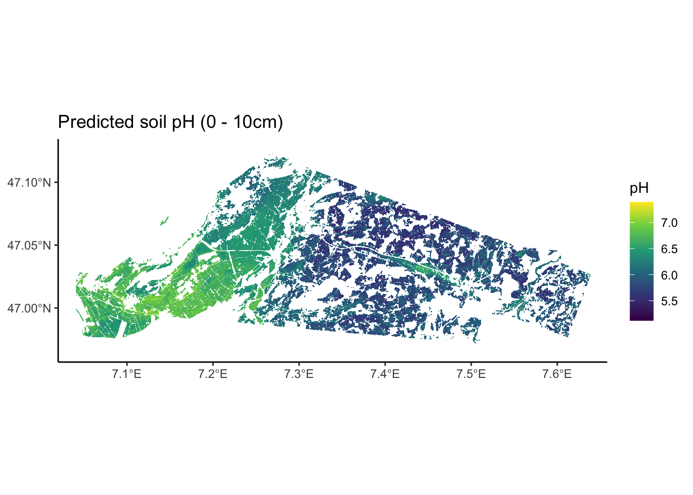

# Load random forest model
rf <- readRDS(here::here("data/rf_for_pH0-10.rds"))
data_cal <- readRDS(here::here("data/cal_for_ph0-10.rds"))
data_val <- readRDS(here::here("data/val_for_ph0-10.rds"))4 Model Analysis
4.1 Load model and data
Our target area to predict over is defined in the file area_to_be_mapped.tif. Since we only want to predict on a given study area, the TIF file comes with a labeling of 0 for pixels that are outside the area of interest and 1 for pixels within the area of interest.
# Load area to be predicted
target_raster <- terra::rast(here::here("data-raw/geodata/study_area/area_to_be_mapped.tif"))
# Turn target raster into a dataframe, 1 px = 1 cell
target_df <- as.data.frame(target_raster, xy = TRUE)
# Filter only for area of interest
target_df <- target_df |> dplyr::filter(area_to_be_mapped == 1)
# Display df
head(target_df) |> knitr::kable()| x | y | area_to_be_mapped |
|---|---|---|
| 2587670 | 1219750 | 1 |
| 2587690 | 1219750 | 1 |
| 2587090 | 1219190 | 1 |
| 2587090 | 1219170 | 1 |
| 2587110 | 1219170 | 1 |
| 2587070 | 1219150 | 1 |
Next, we have to load the relevant covariates to run our model:
Warning
Our basic RandomForest model has not undergone any variable selection, so we are loading almost 100 covariates here. However, as discussed during the model training step, it is not sensible to use all covariates at hand.
# Get a list of all covariate file names
covariate_files <-
list.files(path = here::here("data-raw/geodata/covariates/"),
pattern = ".tif$",
recursive = TRUE,
full.names = TRUE
)
# Filter that list only for the variables used in the RF
used_cov <- rf$forest$independent.variable.names
cov_to_load <- c()
for (i_var in used_cov) {
i <- covariate_files[stringr::str_detect(covariate_files,
paste0("/", i_var, ".tif"))]
cov_to_load <- append(cov_to_load, i)
# cat("\nfor var ", i_var, " load file: ", i)
}
# Load all rasters as a stack
cov_raster <- terra::rast(cov_to_load)
# Get coordinates for which we want data
sampling_xy <- target_df |> dplyr::select(x, y)
# Extract data from covariate raster stack
cov_df <-
terra::extract(cov_raster, # The raster we want to extract from
sampling_xy, # A matrix of x and y values to extract for
ID = FALSE # To not add a default ID column to the output
)
cov_df <- cbind(sampling_xy, cov_df)
# Add rotated coordinates as when preparing training data:
cov_df <-
cov_df |>
dplyr::mutate(
x30 = x*cos(30/180*pi) - y*sin(30/180*pi),
y30 = x*sin(30/180*pi) + y*cos(30/180*pi),
x60 = x*cos(60/180*pi) - y*sin(60/180*pi),
y60 = x*sin(60/180*pi) + y*cos(60/180*pi)
)
# Attaching reference timeset levels from prepared dataset
bern_cov <- readRDS(here::here("data/bern_sampling_locations_with_covariates.rds"))
cov_df$timeset <- "d1979_2010"
levels(cov_df$timeset) <- c(unique(bern_cov$timeset))
# Define numerically variables
cat_vars <-
cov_df |>
# Get number of distinct values per variable
dplyr::summarise(dplyr::across(dplyr::everything(), ~ dplyr::n_distinct(.))) |>
# Turn df into long format for easy filtering
tidyr::pivot_longer(dplyr::everything(),
names_to = "variable",
values_to = "n") |>
# Filter out variables with 10 or less distinct values
dplyr::filter(n <= 10) |>
# Extract the names of these variables
dplyr::pull('variable')
# Define categorical variables
cov_df <-
cov_df |>
dplyr::mutate(dplyr::across(cat_vars, ~ as.factor(.)))
# Reduce dataframe to hold only rows without any NA values
cov_df <-
cov_df |>
tidyr::drop_na()
# Display final dataframe
head(cov_df) |> knitr::kable()| x | y | be_gwn25_hdist | be_gwn25_vdist | cindx10_25 | cindx50_25 | geo500h1id | geo500h3id | lgm | lsf | mrrtf25 | mrvbf25 | mt_gh_y | mt_rr_y | mt_td_y | mt_tt_y | mt_ttvar | NegO | PosO | protindx | Se_alti2m_std_50c | Se_conv2m | Se_curv25m | Se_curv2m_fmean_50c | Se_curv2m_fmean_5c | Se_curv2m_s60 | Se_curv2m_std_50c | Se_curv2m_std_5c | Se_curv2m | Se_curv50m | Se_curv6m | Se_curvplan25m | Se_curvplan2m_fmean_50c | Se_curvplan2m_fmean_5c | Se_curvplan2m_s60 | Se_curvplan2m_s7 | Se_curvplan2m_std_50c | Se_curvplan2m_std_5c | Se_curvplan2m | Se_curvplan50m | Se_curvprof25m | Se_curvprof2m_fmean_50c | Se_curvprof2m_fmean_5c | Se_curvprof2m_s60 | Se_curvprof2m_s7 | Se_curvprof2m_std_50c | Se_curvprof2m_std_5c | Se_curvprof2m | Se_curvprof50m | Se_diss2m_50c | Se_diss2m_5c | Se_e_aspect25m | Se_e_aspect2m_5c | Se_e_aspect2m | Se_e_aspect50m | Se_MRRTF2m | Se_MRVBF2m | Se_n_aspect2m_50c | Se_n_aspect2m_5c | Se_n_aspect2m | Se_n_aspect50m | Se_n_aspect6m | Se_NO2m_r500 | Se_PO2m_r500 | Se_rough2m_10c | Se_rough2m_5c | Se_rough2m_rect3c | Se_SAR2m | Se_SCA2m | Se_slope2m_fmean_50c | Se_slope2m_fmean_5c | Se_slope2m_s60 | Se_slope2m_s7 | Se_slope2m_std_50c | Se_slope2m_std_5c | Se_slope2m | Se_slope50m | Se_slope6m | Se_toposcale2m_r3_r50_i10s | Se_tpi_2m_50c | Se_tpi_2m_5c | Se_tri2m_altern_3c | Se_tsc10_2m | Se_TWI2m_s15 | Se_TWI2m_s60 | Se_TWI2m | Se_vrm2m_r10c | Se_vrm2m | terrTextur | tsc25_18 | tsc25_40 | vdcn25 | vszone | x30 | y30 | x60 | y60 | timeset |
|---|---|---|---|---|---|---|---|---|---|---|---|---|---|---|---|---|---|---|---|---|---|---|---|---|---|---|---|---|---|---|---|---|---|---|---|---|---|---|---|---|---|---|---|---|---|---|---|---|---|---|---|---|---|---|---|---|---|---|---|---|---|---|---|---|---|---|---|---|---|---|---|---|---|---|---|---|---|---|---|---|---|---|---|---|---|---|---|---|---|---|---|---|---|---|---|---|---|
| 2587670 | 1219750 | 852.6916 | 15.664033 | -1.093336 | 9.219586 | 5 | 0 | 6 | 1.6357950 | 0.1075638 | 0.7211104 | 1311.320 | 10791.72 | 57 | 94 | 183 | 1.526693 | 1.475333 | 0.0650055 | 4.784680 | 5.095301 | -0.1573657 | 0.0024712 | 0.8294562 | -0.0401642 | 5.627444 | 8.208909 | 5.1277814 | -0.0951815 | 2.5569961 | -0.0534006 | -0.0230801 | 0.1763837 | -0.0115326 | 0.3709164 | 2.520638 | 3.900391 | 1.0937366 | -0.0541850 | 0.1039651 | -0.0255513 | -0.6530724 | 0.0286316 | -1.1700106 | 4.067357 | 5.008852 | -4.0340447 | 0.0409964 | 0.3920868 | 0.7319978 | -0.0730021 | 0.0523264 | 0.1118718 | -0.0341700 | 0.2049596 | 0.2460670 | 0.9587829 | 0.9984013 | 0.9855098 | 0.9959861 | 0.9919792 | 1.453115 | 1.499916 | 1.2614983 | 0.9052418 | 0.4487450 | 4.031501 | 22.039053 | 5.379811 | 8.8745193 | 6.507652 | 8.9208927 | 4.443856 | 4.4604211 | 6.7506914 | 5.657930 | 9.0587664 | 0 | -0.1146867 | 0.3968636 | 23.013111 | 0.4660870 | 0.0196044 | 0.0193961 | 0.0094032 | 0.0049250 | 0.0021733 | 0.4892213 | 0.4671952 | 2.447572 | 32.42764 | 5 | 1631113 | 2350169 | 237500.5 | 2850863 | d1979_2010 |
| 2587690 | 1219750 | 842.4173 | 14.940482 | -1.088761 | 8.887812 | 5 | 0 | 6 | 1.6952833 | 0.1490467 | 0.6501970 | 1311.240 | 10790.04 | 57 | 94 | 183 | 1.519305 | 1.479355 | 0.0614093 | 4.554082 | -1.164458 | -0.0033177 | 0.0346522 | -0.2036149 | -0.0067883 | 5.807981 | 2.624915 | 0.0343211 | -0.0114668 | -0.5821388 | 0.0590281 | -0.0118661 | 0.0516823 | 0.0017402 | -0.1523290 | 2.609372 | 1.747575 | -0.0235629 | -0.0044247 | 0.0623458 | -0.0465183 | 0.2552971 | 0.0085285 | 0.3911650 | 4.186157 | 1.268572 | -0.0578840 | 0.0070421 | 0.3616736 | 0.4156418 | -0.1002210 | 0.0261770 | 0.1186721 | -0.0198933 | 0.1900981 | 0.4769361 | 0.9681105 | 0.9996192 | 0.9919428 | 0.9949375 | 0.9969665 | 1.509942 | 1.481037 | 1.1013201 | 0.7694993 | 0.4196114 | 4.022690 | 274.031982 | 5.293089 | 6.7173972 | 6.291715 | 6.6285639 | 4.420249 | 1.4163034 | 6.0838585 | 5.312412 | 6.6105819 | 0 | -0.5947826 | -0.0899814 | 20.897743 | 0.4708194 | 0.0147714 | 0.0177614 | 0.0012333 | 0.0016250 | 0.0001495 | 0.4985980 | 0.4697721 | 2.450347 | 32.34033 | 5 | 1631130 | 2350179 | 237510.5 | 2850880 | d1979_2010 |
| 2587090 | 1219190 | 751.8956 | 5.726926 | -11.884583 | -11.109116 | 4 | 0 | 6 | 0.5349063 | 0.5413071 | 1.4682430 | 1310.274 | 10723.66 | 58 | 94 | 184 | 1.555187 | 1.503930 | 0.0460703 | 1.626563 | -20.532444 | 0.0084397 | 0.0061933 | 0.0839349 | -0.0022937 | 6.824774 | 6.073048 | -1.7545626 | -0.0072457 | -1.0616286 | -0.0088943 | -0.0454853 | 0.0885931 | -0.0704493 | 0.1036513 | 2.366981 | 1.279673 | 1.0475039 | -0.0017489 | -0.0173340 | -0.0516786 | 0.0046582 | -0.0681556 | 0.1884064 | 5.534662 | 5.491115 | 2.8020666 | 0.0054969 | 0.5250703 | 0.3176954 | -0.4406129 | -0.5646210 | -0.0504419 | -0.2286900 | 0.0928654 | 1.1235304 | -0.9772032 | 0.8215204 | 0.9954001 | -0.9600990 | 0.9919993 | 1.515766 | 1.494511 | 0.5166996 | 0.4931896 | 0.4272473 | 4.022115 | 13.665169 | 3.551755 | 2.3039992 | 3.040830 | 2.7184446 | 3.948273 | 2.3797400 | 5.7317319 | 1.395017 | 2.3336451 | 0 | -0.0982406 | -0.0702948 | 20.768515 | 0.5078870 | 0.0197626 | 0.0162485 | 0.0259366 | 0.0020749 | 0.0012587 | 0.7806686 | 0.4930030 | 2.233182 | 15.32439 | 8 | 1630891 | 2349395 | 237695.5 | 2850081 | d1979_2010 |
| 2587090 | 1219170 | 735.4257 | 5.784212 | -13.546880 | -12.143552 | 4 | 0 | 6 | 0.5427678 | 0.7348465 | 1.4188210 | 1310.245 | 10721.32 | 58 | 94 | 184 | 1.555535 | 1.504260 | 0.0452300 | 1.741869 | 2.745619 | 0.0117131 | -0.0394273 | 0.1259893 | 0.0330435 | 6.898385 | 2.127208 | 0.6203362 | 0.0312720 | -0.0710808 | 0.0096938 | -0.0903087 | 0.0241072 | -0.0531435 | 0.0095001 | 2.350148 | 1.199804 | 0.2795571 | 0.0035725 | -0.0020192 | -0.0508814 | -0.1018821 | -0.0861870 | -0.0721385 | 5.623002 | 1.172386 | -0.3407791 | -0.0276995 | 0.6905439 | 0.5443047 | -0.5188757 | -0.6621951 | -0.8731300 | -0.2571333 | 1.7519246 | 1.1301626 | -0.9925461 | -0.7484674 | -0.4839056 | -0.9521305 | -0.6938887 | 1.534615 | 1.545543 | 0.5673958 | 0.4292437 | 0.2561375 | 4.003264 | 14.756312 | 3.531246 | 2.2375104 | 3.003023 | 2.1449676 | 3.959431 | 0.7783145 | 2.3075097 | 1.400111 | 1.9295034 | 0 | 0.7135532 | 0.0145723 | 13.433935 | 0.5291796 | 0.0141175 | 0.0159906 | 0.0154473 | 0.0007750 | 0.0005787 | 0.7260778 | 0.4922101 | 2.229970 | 15.40787 | 8 | 1630901 | 2349377 | 237712.8 | 2850071 | d1979_2010 |
| 2587110 | 1219170 | 723.9910 | 6.106696 | -13.322203 | -12.183930 | 4 | 0 | 6 | 0.5323660 | 0.8678100 | 1.3493569 | 1310.299 | 10722.13 | 58 | 94 | 184 | 1.555655 | 1.504170 | 0.0451466 | 1.808976 | -8.940220 | 0.0324950 | -0.0373967 | 0.1306849 | 0.0359804 | 7.503298 | 2.297817 | -0.1434636 | 0.0834899 | -0.1115735 | 0.0275330 | -0.0945719 | 0.0954700 | -0.0239712 | 0.0538922 | 2.387497 | 1.301248 | -0.3521201 | 0.0365431 | -0.0049620 | -0.0571752 | -0.0352149 | -0.0599516 | -0.0394869 | 6.239721 | 1.240976 | -0.2086566 | -0.0469468 | 0.6792284 | 0.5120147 | -0.3097113 | -0.3129207 | -0.2375892 | -0.1402488 | 2.8863275 | 1.3914874 | -0.9945219 | -0.9489474 | -0.9524035 | -0.9798594 | -0.9637377 | 1.536156 | 1.546788 | 0.5236238 | 0.4052551 | 0.2287366 | 4.001763 | 32.816425 | 3.856629 | 1.9259268 | 3.079502 | 1.8851717 | 4.539225 | 0.4211105 | 1.6905378 | 1.347915 | 1.9237802 | 0 | 0.9748727 | -0.0001643 | 11.591580 | 0.5378539 | 0.0122094 | 0.0161002 | 0.0079080 | 0.0004500 | 0.0000955 | 0.7223964 | 0.4901487 | 2.229178 | 15.43506 | 8 | 1630918 | 2349387 | 237722.8 | 2850088 | d1979_2010 |
| 2587070 | 1219150 | 726.0598 | 5.136146 | -14.969542 | -13.059101 | 4 | 0 | 6 | 0.4896232 | 0.8363171 | 1.5352163 | 1310.168 | 10718.23 | 58 | 94 | 184 | 1.556895 | 1.504168 | 0.0449906 | 1.885761 | -5.564820 | 0.1670244 | -0.0237084 | 0.0468207 | 0.0322937 | 6.921697 | 1.829110 | -0.2251399 | 0.0651237 | 0.1595823 | 0.0051374 | -0.0908837 | 0.1198024 | -0.0716825 | 0.0926395 | 2.425535 | 1.074812 | -0.0860424 | 0.0125605 | -0.1618870 | -0.0671752 | 0.0729817 | -0.1039762 | 0.0668136 | 5.548432 | 0.934908 | 0.1390975 | -0.0525633 | 0.7167594 | 0.4836134 | -0.3818592 | -0.5805916 | -0.9587489 | -0.2188960 | 1.1769800 | 2.5623682 | -0.9945219 | -0.8139611 | -0.1249791 | -0.9608662 | -0.7394884 | 1.541335 | 1.547748 | 0.4012785 | 0.2244926 | 0.1277301 | 4.000143 | 3.599204 | 3.335257 | 0.7394082 | 3.145846 | 0.6904325 | 3.804235 | 0.3790899 | 0.4726965 | 2.112438 | 0.4233291 | 0 | 0.7557949 | 0.0065551 | 6.877132 | 0.5070984 | 0.0124573 | 0.0161766 | 0.0134654 | 0.0003000 | 0.0000463 | 0.6677173 | 0.4911794 | 2.225173 | 15.57539 | 8 | 1630893 | 2349350 | 237720.1 | 2850043 | d1979_2010 |
4.2 Model testing
4.2.1 Make predictions
# Need to load {ranger} because ranger-object is used in predict()
library(ranger)
# Make predictions for validation sites
prediction <-
predict(rf, # RF model
data = data_val, # Predictor data
num.threads = parallel::detectCores()-1)
# Save predictions to validation df
data_val$pred <- prediction$predictions4.2.2 Model metrics
# Calculate error
err <- data_val$ph.0.10 - data_val$pred
# Calculate bias
bias <- mean(err, na.rm = T) |> round(2)
# Calculate RMSE
rmse <- sqrt(mean(err, na.rm = T)) |> round(2)
# Calculate R2
r2 <- cor(data_val$ph.0.10, data_val$pred, method = "pearson")^2 |> round(2)4.2.3 Metric plots
data_val |>
ggplot2::ggplot(ggplot2::aes(x = pred, y = ph.0.10)) +
ggplot2::geom_point() +
ggplot2::geom_smooth(method = "lm",
color = "tomato") +
# Add layout
ggplot2::theme_classic() +
ggplot2::geom_abline(
intercept = 0,
slope = 1,
linetype = "dotted") +
ggplot2::ylim(5, 7.5) +
ggplot2::xlim(5, 7.5) +
ggplot2::labs(
title = "Predicted vs. Observed soil pH 0-10 cm",
# subtitle = paste0("Bias = ", bias, ", RMSE = ", rmse, ", R^2 = ", r2),
subtitle = bquote(paste("Bias = ", .(bias),
", RMSE = ", .(rmse),
", R"^2, " = ", .(r2))),
x = "Predicted",
y = "Observed"
)
4.3 Create prediction maps
# Need to load {ranger} because ranger-object is used in predict()
library(ranger)
# Make predictions using the RF model
prediction <-
predict(rf, # RF model
data = cov_df, # Predictor data
num.threads = parallel::detectCores()-1)
# Attach predictions to dataframe and round them
cov_df$prediction <- round(prediction$predictions, 2)# Extract dataframe with coordinates and predictions
df_map <- cov_df |> dplyr::select(x, y, prediction)
# Turn dataframe into a raster
ra_predictions <-
terra::rast(
df_map, # Table to be transformed
crs = "+init=epsg:2056", # Swiss coordinate system
extent = terra::ext(cov_raster) # Prescribe same extent as predictor rasters
)# Let's have a look at our predictions!
# To have some more flexibility, we can plot this in the ggplot-style as such:
ggplot2::ggplot() +
tidyterra::geom_spatraster(data = ra_predictions) +
ggplot2::scale_fill_viridis_c(
na.value = NA,
option = "viridis",
name = "pH"
) +
ggplot2::theme_classic() +
ggplot2::scale_x_continuous(expand = c(0, 0)) +
ggplot2::scale_y_continuous(expand = c(0, 0)) +
ggplot2::labs(title = "Predicted soil pH (0 - 10cm)")
# Save raster as .tif file
terra::writeRaster(
ra_predictions,
"data/ra_predicted_ph0-10.tif",
datatype = "FLT4S", # FLT4S for floats, INT1U for integers (smaller file)
filetype = "GTiff", # GeoTiff format
overwrite = "TRUE" # Overwrite existing file
)4.4 Example for predicting a categorical variable
Below is an example for how you conducted everything you learned in this tutorial, from data wrangling to model evaluation, but with using a categorical response instead of a continuous one.
4.4.1 Data preparation
# Load clean data
data_clean <- readRDS(here::here("data/bern_sampling_locations_with_covariates.rds"))
# Specify response and predictors
response <- "waterlog.30" # Pick water status at 30cm
# Make sure that response is encoded as factor!
data_clean[[response]] <- factor(data_clean[[response]],
levels = c(0, 1),
labels = c("dry", "wet"))
cat("Target is encoded so that a model predicts the probability that the soil at 30cm is: ",
levels(data_clean[[response]])[1])Target is encoded so that a model predicts the probability that the soil at 30cm is: dry# Specify predictors: Remove soil sampling information
predictors <-
data_clean |>
dplyr::select(-response, # Remove response variable
-site_id_unique, # Remove site ID
-tidyr::starts_with("ph"), # Remove pH information
-tidyr::starts_with("waterlog"), # Remove water-status info
-dclass, # Remove water-status info
-dataset) |> # Remove calib./valid. info
names()
# Split dataset into calibration and validation
data_cal <- data_clean |> dplyr::filter(dataset == "calibration")
data_val <- data_clean |> dplyr::filter(dataset == "validation")
# Filter out any NA to avoid error when running a Random Forest
data_cal <- data_cal |> tidyr::drop_na()
data_val <- data_val |> tidyr::drop_na()
# A little bit of verbose output:
n_tot <- nrow(data_cal) + nrow(data_val)
perc_cal <- (nrow(data_cal) / n_tot) |> round(2) * 100
perc_val <- (nrow(data_val) / n_tot) |> round(2) * 100
cat("For model training, we have a calibration / validation split of: ",
perc_cal, "/", perc_val, "%")For model training, we have a calibration / validation split of: 75 / 25 %4.4.2 Model training
rf <- ranger::ranger(
y = data_cal[, response], # Response variable
x = data_cal[, predictors], # Predictor variables
probability = TRUE, # Set true for categorical variable
seed = 42, # Seed to reproduce randomness
num.threads = parallel::detectCores() - 1) # Use all but one CPU
Warning
Note that we are skipping model interpretation here to keep it brief.
4.4.3 Model testing
4.4.3.1 Model predictions
# Need to load {ranger} because ranger-object is used in predict()
library(ranger)
# Make predictions for validation sites
prediction <-
predict(rf, # RF model
data = data_val, # Predictor data
num.threads = parallel::detectCores()-1)
# Save predictions to validation df
# First row holds probability for reference level
data_val$pred <- round(prediction$predictions[, 1], 2)4.4.3.2 Model metrics
For our predictions, we now have a probabilities for the reference level of our response. To turn this into the original factor levels of 0 and 1, we have to map a threshold to these probabilities. Here, we use a threshold of 50%, which may or may not be optimal - a discussion for another course.
# Set threshold
thresh <- 0.5
# Translate probability values into comparable factor levels
data_val$pred_lvl <-
factor(
data_val$pred > thresh,
levels = c(TRUE, FALSE),
labels = levels(data_val[[response]])
)Due to the response variable being a categorical variable, we have to use slightly different model metrics to evaluate our model. To get started, we need a confusion matrix. This 2x2 matrix shows all model predictions and whether they were true/false positives/negatives. Have a look at the table printed below. You can see that in the top left cell, 184 predictions for dry sites and 2 predictinos for wet sites were correct. However, our model predicted 12 times that a site would be wet although it was dry, and 2 times that the site was wet when it was dry instead.
# Create confusion matrix
ma_conf <-
table(
predicted = data_val[[response]],
observed = data_val$pred_lvl
)
# Display confusion matrix
ma_conf observed
predicted dry wet
dry 184 2
wet 12 2From these predictions, we can calculate many different metrics and the {verification} package provides a nice short-cut to get them. Depending on your requirements that your model should meet, you want to investigate different metrics. Here, we will have a look at some more general ones:
# Compute statistics
l_stat <- verification::multi.cont(ma_conf)
# Print output
cat(
"The model showed:",
"\n a percentage of correct values of: ", l_stat$pc,
"\n a bias of (dry / wet predictions): ", round(l_stat$bias, 2),
"\n a Peirce Skill Score of: ", round(l_stat$ps, 2))The model showed:
a percentage of correct values of: 0.93
a bias of (dry / wet predictions): 0.95 3.5
a Peirce Skill Score of: 0.44These metrics looks quite good! We see that in 93% of all cases, our model predicted the water status of a soil location accurately [(184+2)/(184+12+2+2) = 0.93]. The model showed almost no bias when predicting at dry sites but tends to overestiamte at wet sites (predicted 12 times a site is wet when it was dry). But note that this could also be a consequence of our data being skewed towards many more dry than wet sites.
The Perice Skill Score answers the question of “How well did the forecast separate ‘yes’ events from ‘no’ events”.1 This means how well our model separated dry from wet sites. The score has a range of [-1, 1] where 1 means that there is a perfect distinction, -1 means that the model always gets it wrong (so, simply taking the opposite of the prediction always get it right), and 0 means that the model is no better than guessing randomly. We see that our model has a score of 0.44, which means that is certainly better than just random predictions but - in line with the bias - tends to predict dry sites to be wet.
Note: The Peirce Skill Score is originally from Peirce, C. S., 1884: The numerical measure of the success of pre- dictions. Science, 4, 453–454. But it has been re-discovered several times since, which is why it also often referred to as “Kuipers Skill Score” or “Hanssen-Kuiper Skill Score”, or “True Skill Statistic”.
4.4.3.3 Metric plots
Let’s create a combined violin-box-plot to get a better feeling for our predictions. The plot below visualizes what we already learned from the model metrics. That is, that our model tends to predict dry sites quite well (see how close the median is to 1?) but suffers from a few outliers. If we were to increase the prediction threshold thresh defined above, our model would perform words, as more outliers fall below the threshold. Also, the prediction for wet sites is not very clear as indicated by the relatively even distribution of predicted probabilities, and the median at around 75%.
data_val |>
ggplot2::ggplot() +
ggplot2::aes(x = waterlog.30, y = pred, fill = waterlog.30) +
ggplot2::geom_violin() +
ggplot2::geom_boxplot(width = 0.07) +
ggplot2::labs(
title = "Prediction of Water Status at 30cm",
y = "Predicted Probability",
x = "Observed Status",
fill = "Water\nStatus"
) +
ggplot2::geom_abline(
intercept = thresh,
slope = 0,
linetype = "dotted"
) +
ggplot2::ylim(0, 1) +
ggplot2::theme_classic()
4.4.4 Prediction map
Note that we have not conducted any variable selection for this simplified example. Thus, we have to create a new raster stack with all predictors and cannot re-use the subset that we used for predicting pH.
# Get a list of all covariate file names
covariate_files <-
list.files(path = here::here("data-raw/geodata/covariates/"),
pattern = ".tif$",
recursive = TRUE,
full.names = TRUE
)
# Load all rasters as a stack
cov_raster <- terra::rast(covariate_files)
# Get coordinates for which we want data
sampling_xy <- target_df |> dplyr::select(x, y)
# Extract data from covariate raster stack
cov_df <-
terra::extract(cov_raster, # The raster we want to extract from
sampling_xy, # A matrix of x and y values to extract for
ID = FALSE # To not add a default ID column to the output
)
cov_df <- cbind(sampling_xy, cov_df)
# Add rotated coordinates as when preparing training data:
cov_df <-
cov_df |>
dplyr::mutate(
x30 = x*cos(30/180*pi) - y*sin(30/180*pi),
y30 = x*sin(30/180*pi) + y*cos(30/180*pi),
x60 = x*cos(60/180*pi) - y*sin(60/180*pi),
y60 = x*sin(60/180*pi) + y*cos(60/180*pi)
)
# Attaching reference timeset levels from prepared dataset
bern_cov <- readRDS(here::here("data/bern_sampling_locations_with_covariates.rds"))
cov_df$timeset <- "d1979_2010"
levels(cov_df$timeset) <- c(unique(bern_cov$timeset))
# Define numerically encoded categorical variables
cat_vars <-
cov_df |>
# Get number of distinct values per variable
dplyr::summarise(dplyr::across(dplyr::everything(), ~ dplyr::n_distinct(.))) |>
# Turn df into long format for easy filtering
tidyr::pivot_longer(dplyr::everything(),
names_to = "variable",
values_to = "n") |>
# Filter out variables with 10 or less distinct values
dplyr::filter(n <= 10) |>
# Extract the names of these variables
dplyr::pull('variable')
cov_df <-
cov_df |>
dplyr::mutate(dplyr::across(cat_vars, ~ as.factor(.)))
# Reduce dataframe to hold only rows without any NA values
cov_df <-
cov_df |>
tidyr::drop_na()
# Display final dataframe
head(cov_df) |> knitr::kable()| x | y | be_gwn25_hdist | be_gwn25_vdist | cindx10_25 | cindx50_25 | geo500h1id | geo500h3id | lgm | lsf | mrrtf25 | mrvbf25 | mt_gh_y | mt_rr_y | mt_td_y | mt_tt_y | mt_ttvar | NegO | PosO | protindx | Se_alti2m_std_50c | Se_conv2m | Se_curv25m | Se_curv2m_fmean_50c | Se_curv2m_fmean_5c | Se_curv2m_s60 | Se_curv2m_std_50c | Se_curv2m_std_5c | Se_curv2m | Se_curv50m | Se_curv6m | Se_curvplan25m | Se_curvplan2m_fmean_50c | Se_curvplan2m_fmean_5c | Se_curvplan2m_s60 | Se_curvplan2m_s7 | Se_curvplan2m_std_50c | Se_curvplan2m_std_5c | Se_curvplan2m | Se_curvplan50m | Se_curvprof25m | Se_curvprof2m_fmean_50c | Se_curvprof2m_fmean_5c | Se_curvprof2m_s60 | Se_curvprof2m_s7 | Se_curvprof2m_std_50c | Se_curvprof2m_std_5c | Se_curvprof2m | Se_curvprof50m | Se_diss2m_50c | Se_diss2m_5c | Se_e_aspect25m | Se_e_aspect2m_5c | Se_e_aspect2m | Se_e_aspect50m | Se_MRRTF2m | Se_MRVBF2m | Se_n_aspect2m_50c | Se_n_aspect2m_5c | Se_n_aspect2m | Se_n_aspect50m | Se_n_aspect6m | Se_NO2m_r500 | Se_PO2m_r500 | Se_rough2m_10c | Se_rough2m_5c | Se_rough2m_rect3c | Se_SAR2m | Se_SCA2m | Se_slope2m_fmean_50c | Se_slope2m_fmean_5c | Se_slope2m_s60 | Se_slope2m_s7 | Se_slope2m_std_50c | Se_slope2m_std_5c | Se_slope2m | Se_slope50m | Se_slope6m | Se_toposcale2m_r3_r50_i10s | Se_tpi_2m_50c | Se_tpi_2m_5c | Se_tri2m_altern_3c | Se_tsc10_2m | Se_TWI2m_s15 | Se_TWI2m_s60 | Se_TWI2m | Se_vrm2m_r10c | Se_vrm2m | terrTextur | tsc25_18 | tsc25_40 | vdcn25 | vszone | x30 | y30 | x60 | y60 | timeset |
|---|---|---|---|---|---|---|---|---|---|---|---|---|---|---|---|---|---|---|---|---|---|---|---|---|---|---|---|---|---|---|---|---|---|---|---|---|---|---|---|---|---|---|---|---|---|---|---|---|---|---|---|---|---|---|---|---|---|---|---|---|---|---|---|---|---|---|---|---|---|---|---|---|---|---|---|---|---|---|---|---|---|---|---|---|---|---|---|---|---|---|---|---|---|---|---|---|---|
| 2587670 | 1219750 | 852.6916 | 15.664033 | -1.093336 | 9.219586 | 5 | 0 | 6 | 1.6357950 | 0.1075638 | 0.7211104 | 1311.320 | 10791.72 | 57 | 94 | 183 | 1.526693 | 1.475333 | 0.0650055 | 4.784680 | 5.095301 | -0.1573657 | 0.0024712 | 0.8294562 | -0.0401642 | 5.627444 | 8.208909 | 5.1277814 | -0.0951815 | 2.5569961 | -0.0534006 | -0.0230801 | 0.1763837 | -0.0115326 | 0.3709164 | 2.520638 | 3.900391 | 1.0937366 | -0.0541850 | 0.1039651 | -0.0255513 | -0.6530724 | 0.0286316 | -1.1700106 | 4.067357 | 5.008852 | -4.0340447 | 0.0409964 | 0.3920868 | 0.7319978 | -0.0730021 | 0.0523264 | 0.1118718 | -0.0341700 | 0.2049596 | 0.2460670 | 0.9587829 | 0.9984013 | 0.9855098 | 0.9959861 | 0.9919792 | 1.453115 | 1.499916 | 1.2614983 | 0.9052418 | 0.4487450 | 4.031501 | 22.039053 | 5.379811 | 8.8745193 | 6.507652 | 8.9208927 | 4.443856 | 4.4604211 | 6.7506914 | 5.657930 | 9.0587664 | 0 | -0.1146867 | 0.3968636 | 23.013111 | 0.4660870 | 0.0196044 | 0.0193961 | 0.0094032 | 0.0049250 | 0.0021733 | 0.4892213 | 0.4671952 | 2.447572 | 32.42764 | 5 | 1631113 | 2350169 | 237500.5 | 2850863 | d1979_2010 |
| 2587690 | 1219750 | 842.4173 | 14.940482 | -1.088761 | 8.887812 | 5 | 0 | 6 | 1.6952833 | 0.1490467 | 0.6501970 | 1311.240 | 10790.04 | 57 | 94 | 183 | 1.519305 | 1.479355 | 0.0614093 | 4.554082 | -1.164458 | -0.0033177 | 0.0346522 | -0.2036149 | -0.0067883 | 5.807981 | 2.624915 | 0.0343211 | -0.0114668 | -0.5821388 | 0.0590281 | -0.0118661 | 0.0516823 | 0.0017402 | -0.1523290 | 2.609372 | 1.747575 | -0.0235629 | -0.0044247 | 0.0623458 | -0.0465183 | 0.2552971 | 0.0085285 | 0.3911650 | 4.186157 | 1.268572 | -0.0578840 | 0.0070421 | 0.3616736 | 0.4156418 | -0.1002210 | 0.0261770 | 0.1186721 | -0.0198933 | 0.1900981 | 0.4769361 | 0.9681105 | 0.9996192 | 0.9919428 | 0.9949375 | 0.9969665 | 1.509942 | 1.481037 | 1.1013201 | 0.7694993 | 0.4196114 | 4.022690 | 274.031982 | 5.293089 | 6.7173972 | 6.291715 | 6.6285639 | 4.420249 | 1.4163034 | 6.0838585 | 5.312412 | 6.6105819 | 0 | -0.5947826 | -0.0899814 | 20.897743 | 0.4708194 | 0.0147714 | 0.0177614 | 0.0012333 | 0.0016250 | 0.0001495 | 0.4985980 | 0.4697721 | 2.450347 | 32.34033 | 5 | 1631130 | 2350179 | 237510.5 | 2850880 | d1979_2010 |
| 2587090 | 1219190 | 751.8956 | 5.726926 | -11.884583 | -11.109116 | 4 | 0 | 6 | 0.5349063 | 0.5413071 | 1.4682430 | 1310.274 | 10723.66 | 58 | 94 | 184 | 1.555187 | 1.503930 | 0.0460703 | 1.626563 | -20.532444 | 0.0084397 | 0.0061933 | 0.0839349 | -0.0022937 | 6.824774 | 6.073048 | -1.7545626 | -0.0072457 | -1.0616286 | -0.0088943 | -0.0454853 | 0.0885931 | -0.0704493 | 0.1036513 | 2.366981 | 1.279673 | 1.0475039 | -0.0017489 | -0.0173340 | -0.0516786 | 0.0046582 | -0.0681556 | 0.1884064 | 5.534662 | 5.491115 | 2.8020666 | 0.0054969 | 0.5250703 | 0.3176954 | -0.4406129 | -0.5646210 | -0.0504419 | -0.2286900 | 0.0928654 | 1.1235304 | -0.9772032 | 0.8215204 | 0.9954001 | -0.9600990 | 0.9919993 | 1.515766 | 1.494511 | 0.5166996 | 0.4931896 | 0.4272473 | 4.022115 | 13.665169 | 3.551755 | 2.3039992 | 3.040830 | 2.7184446 | 3.948273 | 2.3797400 | 5.7317319 | 1.395017 | 2.3336451 | 0 | -0.0982406 | -0.0702948 | 20.768515 | 0.5078870 | 0.0197626 | 0.0162485 | 0.0259366 | 0.0020749 | 0.0012587 | 0.7806686 | 0.4930030 | 2.233182 | 15.32439 | 8 | 1630891 | 2349395 | 237695.5 | 2850081 | d1979_2010 |
| 2587090 | 1219170 | 735.4257 | 5.784212 | -13.546880 | -12.143552 | 4 | 0 | 6 | 0.5427678 | 0.7348465 | 1.4188210 | 1310.245 | 10721.32 | 58 | 94 | 184 | 1.555535 | 1.504260 | 0.0452300 | 1.741869 | 2.745619 | 0.0117131 | -0.0394273 | 0.1259893 | 0.0330435 | 6.898385 | 2.127208 | 0.6203362 | 0.0312720 | -0.0710808 | 0.0096938 | -0.0903087 | 0.0241072 | -0.0531435 | 0.0095001 | 2.350148 | 1.199804 | 0.2795571 | 0.0035725 | -0.0020192 | -0.0508814 | -0.1018821 | -0.0861870 | -0.0721385 | 5.623002 | 1.172386 | -0.3407791 | -0.0276995 | 0.6905439 | 0.5443047 | -0.5188757 | -0.6621951 | -0.8731300 | -0.2571333 | 1.7519246 | 1.1301626 | -0.9925461 | -0.7484674 | -0.4839056 | -0.9521305 | -0.6938887 | 1.534615 | 1.545543 | 0.5673958 | 0.4292437 | 0.2561375 | 4.003264 | 14.756312 | 3.531246 | 2.2375104 | 3.003023 | 2.1449676 | 3.959431 | 0.7783145 | 2.3075097 | 1.400111 | 1.9295034 | 0 | 0.7135532 | 0.0145723 | 13.433935 | 0.5291796 | 0.0141175 | 0.0159906 | 0.0154473 | 0.0007750 | 0.0005787 | 0.7260778 | 0.4922101 | 2.229970 | 15.40787 | 8 | 1630901 | 2349377 | 237712.8 | 2850071 | d1979_2010 |
| 2587110 | 1219170 | 723.9910 | 6.106696 | -13.322203 | -12.183930 | 4 | 0 | 6 | 0.5323660 | 0.8678100 | 1.3493569 | 1310.299 | 10722.13 | 58 | 94 | 184 | 1.555655 | 1.504170 | 0.0451466 | 1.808976 | -8.940220 | 0.0324950 | -0.0373967 | 0.1306849 | 0.0359804 | 7.503298 | 2.297817 | -0.1434636 | 0.0834899 | -0.1115735 | 0.0275330 | -0.0945719 | 0.0954700 | -0.0239712 | 0.0538922 | 2.387497 | 1.301248 | -0.3521201 | 0.0365431 | -0.0049620 | -0.0571752 | -0.0352149 | -0.0599516 | -0.0394869 | 6.239721 | 1.240976 | -0.2086566 | -0.0469468 | 0.6792284 | 0.5120147 | -0.3097113 | -0.3129207 | -0.2375892 | -0.1402488 | 2.8863275 | 1.3914874 | -0.9945219 | -0.9489474 | -0.9524035 | -0.9798594 | -0.9637377 | 1.536156 | 1.546788 | 0.5236238 | 0.4052551 | 0.2287366 | 4.001763 | 32.816425 | 3.856629 | 1.9259268 | 3.079502 | 1.8851717 | 4.539225 | 0.4211105 | 1.6905378 | 1.347915 | 1.9237802 | 0 | 0.9748727 | -0.0001643 | 11.591580 | 0.5378539 | 0.0122094 | 0.0161002 | 0.0079080 | 0.0004500 | 0.0000955 | 0.7223964 | 0.4901487 | 2.229178 | 15.43506 | 8 | 1630918 | 2349387 | 237722.8 | 2850088 | d1979_2010 |
| 2587070 | 1219150 | 726.0598 | 5.136146 | -14.969542 | -13.059101 | 4 | 0 | 6 | 0.4896232 | 0.8363171 | 1.5352163 | 1310.168 | 10718.23 | 58 | 94 | 184 | 1.556895 | 1.504168 | 0.0449906 | 1.885761 | -5.564820 | 0.1670244 | -0.0237084 | 0.0468207 | 0.0322937 | 6.921697 | 1.829110 | -0.2251399 | 0.0651237 | 0.1595823 | 0.0051374 | -0.0908837 | 0.1198024 | -0.0716825 | 0.0926395 | 2.425535 | 1.074812 | -0.0860424 | 0.0125605 | -0.1618870 | -0.0671752 | 0.0729817 | -0.1039762 | 0.0668136 | 5.548432 | 0.934908 | 0.1390975 | -0.0525633 | 0.7167594 | 0.4836134 | -0.3818592 | -0.5805916 | -0.9587489 | -0.2188960 | 1.1769800 | 2.5623682 | -0.9945219 | -0.8139611 | -0.1249791 | -0.9608662 | -0.7394884 | 1.541335 | 1.547748 | 0.4012785 | 0.2244926 | 0.1277301 | 4.000143 | 3.599204 | 3.335257 | 0.7394082 | 3.145846 | 0.6904325 | 3.804235 | 0.3790899 | 0.4726965 | 2.112438 | 0.4233291 | 0 | 0.7557949 | 0.0065551 | 6.877132 | 0.5070984 | 0.0124573 | 0.0161766 | 0.0134654 | 0.0003000 | 0.0000463 | 0.6677173 | 0.4911794 | 2.225173 | 15.57539 | 8 | 1630893 | 2349350 | 237720.1 | 2850043 | d1979_2010 |
Now that we have our predictor raster again, we can make our predictions and plot them.
# Need to load {ranger} because ranger-object is used in predict()
library(ranger)
# Make predictions using the RF model
prediction <-
predict(rf, # RF model
data = cov_df, # Predictor data
num.threads = parallel::detectCores()-1)
# Attach predictions to dataframe and round them
cov_df$prediction <- round(prediction$predictions[,1], 2)
Tip
Note the difference to the regression task before: To access the predicted probabilities, we need to use prediction$predictions[,1].
# Extract dataframe with coordinates and predictions
df_map <- cov_df |> dplyr::select(x, y, prediction)
# Turn dataframe into a raster
ra_predictions <-
terra::rast(
df_map, # Table to be transformed
crs = "+init=epsg:2056", # Swiss coordinate system
extent = terra::ext(cov_raster) # Prescribe same extent as predictor rasters
)# Let's have a look at our predictions!
# To have some more flexibility, we can plot this in the ggplot-style as such:
ggplot2::ggplot() +
tidyterra::geom_spatraster(data = ra_predictions) +
ggplot2::scale_fill_viridis_c(
na.value = NA,
option = "viridis",
name = "Probability"
) +
ggplot2::theme_classic() +
ggplot2::scale_x_continuous(expand = c(0, 0)) +
ggplot2::scale_y_continuous(expand = c(0, 0)) +
ggplot2::labs(title = expression(paste("Predicted probability for ",
italic(bold("no")),
" waterlog at 30 cm")))
See this useful page on forecast verification: https://www.cawcr.gov.au/projects/verification/↩︎